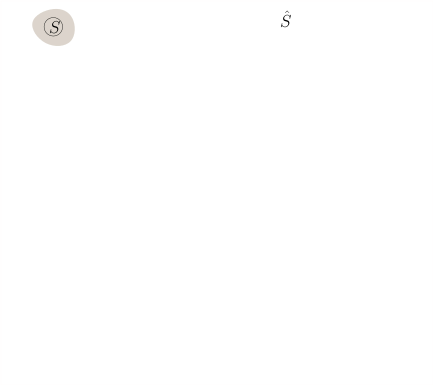
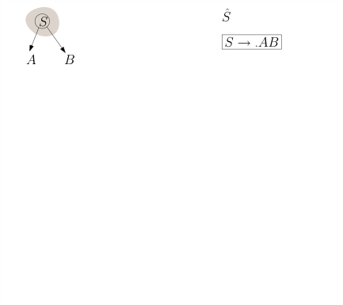
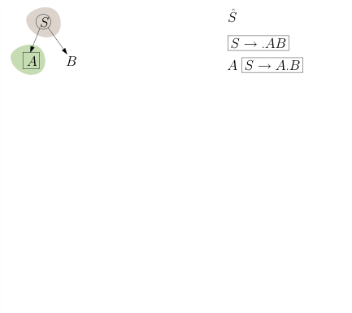
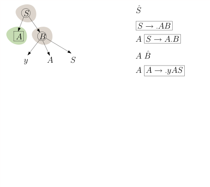
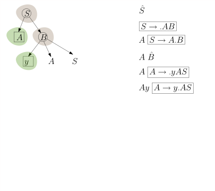
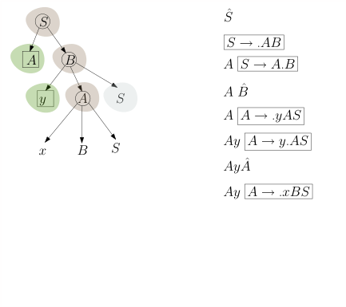
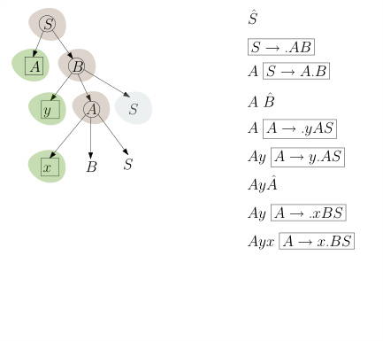
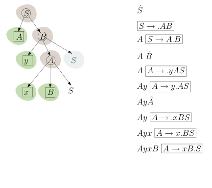
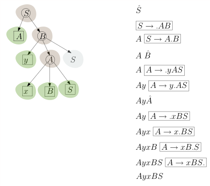
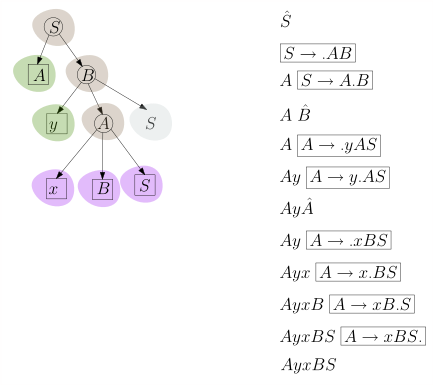

<div id="rightSideWrapper">
  <div class="content">
    <div class="chapter">
      <div class="subChapter">
        <h1 class="hidden-title">
          <span class="subChapterTitle">5.6 Der DK-Automat</span>
        </h1>

        <h2>
          Von der Grammatik \(\hat{G}\) zu einem nichtdeterministischen
          endlichen Automaten
        </h2>

        <p>
          Um den \(LR(0)\)-Parser gemäß
          <a href="./05-05-d-linker-Rand-und-Bluete.html#algorithm-LR-parser">Algorithmus 5.8.7</a
          >
          zu implementieren, müssen wir den Test \(\gamma \stackrel{?}\in
          \Front(G)\) durchführen und, falls die Antwort <em>ja</em> ist, die
          Blüte finden. Dies gelingt uns, indem wir die Grammatik \(\hat{G}\) in
          einen endlichen Automaten umwandeln.
          <a href="./04-03-nfsm.html#regular-grammar-to-fsm">Theorem 4.3.8</a>
          und die ihm vorhergehende Konstruktion zeigen, wie man das macht.
          Anstatt allerdings das Theorem als "black box" zu verwenden, gehen wir
          die Konstruktion anhand zweier fiktiver Produktion $X \rightarrow
          aBcDe$ und $X \rightarrow uVw$ Schritt für Schritt durch. Wir erkennen
          die Terminale $\Sigma = \{a,c,e,u,w\}$ und die Nichtterminale $N =
          \{X,B,D,V\}$. In $\dk{G}$ sind \{a,c,e,u,w,A,B,D,V\} alles Terminale,
          und die Nichtterminale sind $\dk{N} = \{\dk{X}, \dk{B}, \dk{D},
          \dk{V}\}.$ Die Produktionen von $\hat{G}$ sind \begin{align*} \dk{X} &
          \rightarrow a\dk{B} \\ \dk{X} & \rightarrow a\dkt{B}c\dk{D} \\ \dk{X}
          & \rightarrow a\dkt{B}c\dkt{D}e \\ & \\ \dk{X} & \rightarrow u\dk{V}
          \\ \dk{X} & \rightarrow u\dkt{V}w \end{align*}
        </p>

        <p>
          Diese übersetzen wir in einen verallgemeinert nichtdeterministischen
          Automaten, bei dem jede Kante mit einem Wort $\beta \in (\Sigma \cup
          N)^*$, also aus <em>Terminalen</em>
          der Grammatik $\dk{G}$ beschriftet ist:
        </p>
        <figure>
          
        </figure>
        <p>
          Wir brechen die Kanten in Stücke, so dass jede mit genau einem Zeichen
          beschriftet ist:
        </p>
        <figure>
          
        </figure>
        <p>
          Nochmal: jede Kante ist mit einem <em>Terminalsymbol</em> beschriftet.
          Die Symbole $B, D, V$ sind <em>Terminale</em> in der Grammatik
          $\dk{G}$. Wenn wir $\epsilon$-Übergänge zulassen, können wir den
          Automaten übersichtlicher gestalten und mehrere Zustände
          zusammenfassen:
        </p>
        <figure>
          
        </figure>
        <p>
          Wir werden uns noch bessere Namen für die Zwischenzustände ausdenken.
          Wenn wir uns an die Rechtsableitungsbäume mit Stamm, linkem Rand,
          Blüte und rechtem Rest erinnern, dann haben die Zwischenzustände eine
          klare Bedeutung: der Zustand $4$ oben zum Beispiel bedeutet, dass der
          Knoten $X$ im Stamm mit $a, B, c, D, e$ beschriftete Kinder hat und
          wir uns bereits entschieden haben, dass $a$, $B$ und $c$
          <em>Blätter</em> sein sollen, also zum linken Rand gehören. Der
          Übergang $\boxed{4} \step{D} \boxed{5}$ entspricht dann der
          Entscheidung, auch $D$ zu einem Blatt zu machen, während $\boxed{4}
          \step{\epsilon} \dk{D}$ der Entscheidung entspricht, $D$ zu einem
          Knoten im Stamm zu machen und eine $D$-Produktion anzuwenden. Die
          beiden $\epsilon$-Übergänge von $\dk{X}$ nach $\boxed{1}$ bzw.
          $\boxed{7}$ stellen einfach sicher, dass wir uns erst entscheiden, mit
          welcher Produktion wir den Stammknoten $X$ expandieren, bevor wir
          weitermachen. Daher nennen wir Zustand $\boxed{4}$ um in $\boxed{X
          \rightarrow aBc.De}$, wobei der Punkt $.$ markiert, welchen Teil der
          rechten Seite wir bereits gelesen haben. Wir erhalten folgendes Bild:
        </p>
        <figure>
          
        </figure>

        <h2>Die $a^{m+k}b^m$-Grammatik</h2>
        <p>Wir illustrieren obige Vorgehensweise nun anhand der Grammatik</p>

        <p id="the-grammar">
          \begin{align*} G & : \\ S & \rightarrow aS \\ S & \rightarrow B \\ B &
          \rightarrow aBb \\ B & \rightarrow ab \end{align*}
        </p>

        <p>
          Laut Gebrauchsanweisung aus dem letzten Teilkapitel hat die Grammatik
          $\dk{G}$ die Terminalsymbole $\Sigma \cup N = \{a, b, S, B\}$ und die
          Nichtterminale $\dk{N} = \{\dk{S}, \dk{B}\}$. Die Produktionen von
          $\dk{G}$ ergeben sich wie folgt:
        </p>

        \begin{align*} \begin{array}{l|l} \textnormal{Produktion in $G$} &
        \textnormal{Produktion in $\hat{G}$} \\ \hline % % S \rightarrow aS &
        {\dk{S}} \rightarrow \dkt{a} \dk{S}\\ & {\dk{S}} \rightarrow \dkt{a}
        \dkt{S}\\ \hline % S \rightarrow B & {\dk{S}} \rightarrow \dk{B}\\ &
        {\dk{S}} \rightarrow \dkt{B}\\ \hline % B \rightarrow aBb & {\dk{B}}
        \rightarrow \dkt{a}\dk{B}\\ &{\dk{B}} \rightarrow
        \dkt{a}\dkt{B}\dkt{b}\\ \hline % B \rightarrow ab & {\dk{B}} \rightarrow
        \dkt{ab} \end{array} \end{align*}

        <p>In dieser Grammatik betrachten wir die Rechtsableitung</p>
        \begin{align*} S \Step{} aS \Step{} aaS \Step{} aaB \Step{} aaaBb
        \Step{} aaaaBbb \Step{} aaaaaBbbb \end{align*}
        <p>
          Es gilt $\front(aaaaaBbbb) = aaaaaBb$. In $\hat{G}$ entspricht die
          obige Rechtsableitung der Ableitung
        </p>
        \begin{align*} \hat{S} \Step{} a\hat{S} \Step{} aa\hat{S} \Step{}
        aa\hat{B} \Step{} aaa\hat{B} \Step{} aaaaBb \end{align*}

        <p>
          Den nichtdeterministischen DK-Automaten (mit $\epsilon$-Übergängen)
          können wir nun Schritt für Schritt zeichnen:
        </p>

        <figure class="centered-figure well container">
          <a
            class="left carousel-control-prev-icon"
            href="#aaabb-dk-nea"
            data-slide="prev">
            <div class="carousel-nav-icon">
              
            </div>
          </a>
          <a
            class="right carousel-control-next-icon"
            href="#aaabb-dk-nea"
            data-slide="next">
            <div class="carousel-nav-icon">
              
            </div>
          </a>
          <div
            id="aaabb-dk-nea"
            class="carousel"
            data-interval="false"
            style="display: inline-block">
            <ol class="carousel-indicators">
              <li
                data-target="#aaabb-dk-nea"
                data-slide-to="1"
                class="active"></li>
              <li data-target="#aaabb-dk-nea" data-slide-to="2"></li>
              <li data-target="#aaabb-dk-nea" data-slide-to="3"></li>
              <li data-target="#aaabb-dk-nea" data-slide-to="4"></li>
              <li data-target="#aaabb-dk-nea" data-slide-to="5"></li>
              <li data-target="#aaabb-dk-nea" data-slide-to="6"></li>
              <li data-target="#aaabb-dk-nea" data-slide-to="7"></li>
              <li data-target="#aaabb-dk-nea" data-slide-to="8"></li>
              <li data-target="#aaabb-dk-nea" data-slide-to="9"></li>
              <li data-target="#aaabb-dk-nea" data-slide-to="10"></li>
              <li data-target="#aaabb-dk-nea" data-slide-to="11"></li>
            </ol>
            <div class="carousel-inner" style="display: inline-block">
              <div class="item active">
                
              </div>
              <div class="item">
                
              </div>
              <div class="item">
                
              </div>
              <div class="item">
                
              </div>
              <div class="item">
                
              </div>
              <div class="item">
                
              </div>
              <div class="item">
                
              </div>
              <div class="item">
                
              </div>
              <div class="item">
                
              </div>
              <div class="item">
                
              </div>
              <div class="item">
                
              </div>
            </div>
          </div>
        </figure>

        <!--
                    <p>
                        \begin{align*}
                        G & : \\
                        S & \rightarrow AB \\
                        A & \rightarrow xBS \ | \ Bz \\
                        B & \rightarrow yAS \ | \ Az \ | \ x \ | \ y \ | \ z
                        \end{align*}
                        Warnung: dies ist <em>keine</em> LR(0)-Grammatik, wie wir bald sehen werden.
                        Die Grammatik \(\hat{G}\) und der DK-Automaten aber können für <em>alle</em>
                        kontextfreien Grammatiken \(G\) konstruiert werden, ob LR(0) oder nicht.
                        Die erste Beobachtung ist, dass unsere Grammatik \(\hat{G}\) keine
                        reguläre Grammatik im strengen Sinne ist - sie ist eine <em>erweiterte</em>
                        reguläre Grammatik. Eine \(G\)-Produktion wie beispielsweise
                        \(A \rightarrow yAS\) erzeugt drei \(\hat{G}\)-Produktionen:
                        \begin{align*}
                        \dk{A} & \rightarrow y \hat{A} \\
                        \dk{A} & \rightarrow y A \hat{S} \\
                        \dk{A} & \rightarrow y A S \\
                        \end{align*}
                        Die zweite und dritte Produktion erzeugen mehr als ein Terminal in <em>einem</em>
                        Schritt. Das ist streng genommen nicht erlaubt. Wir können es aber
                        leicht in eine "richtige" reguläre Grammatik überführen, in dem wir
                        Plathalter-Nichtterminale einführen.
                        So ähnlich ist dann auch tatsächlich die DK-Grammatik definiert,
                        nur dass sie ein paar Dinge expliziter macht.
                        In der DK-Grammatik wird die \(G\)-Produktion \(A \rightarrow yAS\)
                        zu folgenden Produktionen:
                    </p>

                    \begin{align*}
                    \hat{A} & \rightarrow \boxed{A \rightarrow \text{.}yAS} \tag{wir entscheiden uns für eine
                    $A$-Produktion} \\
                    \boxed{A \rightarrow \text{.}yAS} & \rightarrow y\ \boxed{A \rightarrow y\text{.}AS} \tag{\(y\) wird
                    ein Blatt} \\
                    \boxed{A \rightarrow y\text{.}AS} & \rightarrow \hat{A} \tag{\(A\) kommt in den Stamm, \(S\) in den
                    rechten Rand} \\
                    \boxed{A \rightarrow y \text{.}AS} & \rightarrow A\ \boxed{A \rightarrow yA\text{.}S} \tag{\(A\)
                    wird ein Blatt} \\
                    \boxed{A \rightarrow yA\text{.}S} & \rightarrow \hat{S} \tag{\(S\) kommt in den Stamm} \\
                    \boxed{A \rightarrow yA \text{.}S} & \rightarrow S\ \boxed{A \rightarrow yAS\text{.}} \tag{\(S\)
                    wird ein Blatt, und $yAS$ ist somit die Blüte} \\
                    \end{align*}

                    <p>
                        Hier sehen Sie, wie ich schrittweise einen linken Rand mit Blüte
                        aufbaue und parallel dazu dieses Wort mit der DK-Grammatik ableite.
                    </p>

                    <figure class='centered-figure well container'>
                        <a class='left carousel-control-prev-icon' href='#dk-grammar' data-slide='prev'>
                            <div class='carousel-nav-icon'>
                                
                            </div>
                        </a>
                        <a class='right carousel-control-next-icon' href='#dk-grammar' data-slide='next'>
                            <div class='carousel-nav-icon'>
                                
                            </div>
                        </a>
                        <div id='dk-grammar' class='carousel' data-interval='false' style='display:inline-block'>
                            <ol class='carousel-indicators'>
                                <li data-target='#dk-grammar' data-slide-to='1' class='active'></li>
                                <li data-target='#dk-grammar' data-slide-to='2'></li>
                                <li data-target='#dk-grammar' data-slide-to='3'></li>
                                <li data-target='#dk-grammar' data-slide-to='4'></li>
                                <li data-target='#dk-grammar' data-slide-to='5'></li>
                                <li data-target='#dk-grammar' data-slide-to='6'></li>
                                <li data-target='#dk-grammar' data-slide-to='7'></li>
                                <li data-target='#dk-grammar' data-slide-to='8'></li>
                                <li data-target='#dk-grammar' data-slide-to='9'></li>
                                <li data-target='#dk-grammar' data-slide-to='10'></li>
                                <li data-target='#dk-grammar' data-slide-to='11'></li>
                                <li data-target='#dk-grammar' data-slide-to='12'></li>
                                <li data-target='#dk-grammar' data-slide-to='13'></li>
                            </ol>
                            <div class='carousel-inner' style='display:inline-block'>
                                <div class='item active'></div>
                                <div class='item'></div>
                                <div class='item'></div>
                                <div class='item'></div>
                                <div class='item'></div>
                                <div class='item'></div>
                                <div class='item'></div>
                                <div class='item'></div>
                                <div class='item'></div>
                                <div class='item'></div>
                                <div class='item'></div>
                                <div class='item'></div>
                                <div class='item'></div>
</div>                    </figure>

                    <p>Jetzt baue ich einen nichtdeterministischen endlichen Automaten mit
                        \(\epsilon\)-Übergängen für diese Grammatik:
                    </p>
                    <figure class='centered-figure well container'>
                        <a class='left carousel-control-prev-icon' href='#dk-automaton-3' data-slide='prev'>
                            <div class='carousel-nav-icon'>
                                
                            </div>
                        </a>
                        <a class='right carousel-control-next-icon' href='#dk-automaton-3' data-slide='next'>
                            <div class='carousel-nav-icon'>
                                
                            </div>
                        </a>
                        <div id='dk-automaton-3' class='carousel' data-interval='false' style='display:inline-block'>
                            <ol class='carousel-indicators'>
                                <li data-target='#dk-automaton-3' data-slide-to='1' class='active'></li>
                                <li data-target='#dk-automaton-3' data-slide-to='2'></li>
                                <li data-target='#dk-automaton-3' data-slide-to='3'></li>
                                <li data-target='#dk-automaton-3' data-slide-to='4'></li>
                                <li data-target='#dk-automaton-3' data-slide-to='5'></li>
                                <li data-target='#dk-automaton-3' data-slide-to='6'></li>
                                <li data-target='#dk-automaton-3' data-slide-to='7'></li>
                                <li data-target='#dk-automaton-3' data-slide-to='8'></li>
                                <li data-target='#dk-automaton-3' data-slide-to='9'></li>
                                <li data-target='#dk-automaton-3' data-slide-to='10'></li>
                                <li data-target='#dk-automaton-3' data-slide-to='11'></li>
                                <li data-target='#dk-automaton-3' data-slide-to='12'></li>
                                <li data-target='#dk-automaton-3' data-slide-to='13'></li>
                                <li data-target='#dk-automaton-3' data-slide-to='14'></li>
                                <li data-target='#dk-automaton-3' data-slide-to='15'></li>
                                <li data-target='#dk-automaton-3' data-slide-to='16'></li>
                            </ol>
                            <div class='carousel-inner' style='display:inline-block'>
                                <div class='item active'></div>
                                <div class='item'></div>
                                <div class='item'></div>
                                <div class='item'></div>
                                <div class='item'></div>
                                <div class='item'></div>
                                <div class='item'></div>
                                <div class='item'></div>
                                <div class='item'></div>
                                <div class='item'></div>
                                <div class='item'></div>
                                <div class='item'></div>
                                <div class='item'></div>
                                <div class='item'></div>
                                <div class='item'></div>
                                <div class='item'></div>
</div>                    </figure>

                -->

        <h2>Der nichtdeterministische DK-Automat</h2>

        <div class="well container theorem">
          <p>
            <span class="numbered-title">Definition</span> Für eine kontextfreie
            Grammatik ist der nichtdeterministische DK-Automat (NDK-Automat) ein
            nichtdeterministischer endlicher Automat mit $\epsilon$-Übergängen,
            den wir wie folgt konstruieren:
          </p>
          <ol>
            <li>
              Für jede Produktion $X \rightarrow \beta$ gibt es einen
              Zustandsübergang $\boxed{X} \step{\epsilon} \boxed{X \step{} .
              \beta}$
            </li>
            <li>
              Für jede Zerlegung $\beta = \beta_1 \sigma \beta_2$ gibt es den
              Zustandsübergang $\boxed{X \step{} \beta_1 . \sigma \beta_2}
              \step{\sigma} \boxed{X \step{} \beta_1 \sigma . \beta_2}$
            </li>
            <li>
              Falls $\sigma$ ein Nichtterminal $Y$ ist, also $\beta = \beta_1 Y
              \beta_2$, gibt es zusätzlich noch den Übergang $\boxed{X \step{}
              \beta_1 . Y \beta_2} \step{\epsilon} \boxed{Y}$
            </li>
          </ol>
          <p>
            Die Interpretation dieser Übergänge in
            Rechtsableitungsbaum-Begriffen ist: (1) heißt, dass $\boxed{X}$ ein
            Stammknoten ist und wir ihn anhand der Regel $X \rightarrow \beta$
            expandieren; wir erschaffen also Kinder, die mit den Symbolen von
            $\beta$ beschriftet sind. (2) heißt, dass wir uns bereits
            entschieden haben, die Kinder $\beta_1$ von $\boxed{X}$ nicht zu
            expandieren, sie also zum linken Rand werden zu lassen, und diese
            Entscheidung nun auch für das Symbol $\sigma$ treffen; (3) bedeutet,
            dass wir uns entschließen $\sigma$ (das hier ein Nichtterminal $Y$
            ist) weiter zu expandieren, es also nicht dem linken Rand zuordnen,
            sondern zu einem Stammknoten werden lassen, uns aber noch nicht
            entschlossen haben, welche Produktion $Y \rightarrow ?$ wir anwenden
            wollen.
          </p>
          <p>
            Der Startzustand ist $\boxed{S}$. Jeder Zustand der Form $\boxed{X
            \step{} \beta .}$ ist ein akzeptierender Zustand.
          </p>
        </div>

        <h2>Den NDK-Automaten deterministisch machen</h2>

        <p>
          Wir wissen ja bereits, wie man einen nichtdeterministischen Automaten
          deterministisch macht: die
          <a href="./04-03-nfsm.html#nfsm-to-fsm">Potenzmengenkonstruktion aus Kapitel 4.3</a>. Hier können wir diese leider nicht direkt anwenden, da der obige
          Automat \(\epsilon\)-Übergänge hat. Wie geht das also nun? Im
          deterministischen Automaten ist wie bei der Potenzmengenkonstruktion
          jeder Zustand eine <em>Menge</em> \(R\) von Zuständen des
          nichtdeterministischen Automaten. Wenn wir nun in eine solche Menge
          \(R\) einen Zustand \(q\) einfügen, dann fügen wir auch alle Zustände
          \(q'\) hinzu, zu denen es einen \(\epsilon\)-Übergang \(q
          \step{\epsilon} q'\) gibt. Für den obigen nichtdeterministischen
          Automaten sieht das dann so aus:
        </p>

        <figure class="centered-figure well container">
          <a
            class="left carousel-control-prev-icon"
            href="#aaabb-dk-dea"
            data-slide="prev">
            <div class="carousel-nav-icon">
              
            </div>
          </a>
          <a
            class="right carousel-control-next-icon"
            href="#aaabb-dk-dea"
            data-slide="next">
            <div class="carousel-nav-icon">
              
            </div>
          </a>
          <div
            id="aaabb-dk-dea"
            class="carousel"
            data-interval="false"
            style="display: inline-block">
            <ol class="carousel-indicators">
              <li
                data-target="#aaabb-dk-dea"
                data-slide-to="1"
                class="active"></li>
              <li data-target="#aaabb-dk-dea" data-slide-to="2"></li>
              <li data-target="#aaabb-dk-dea" data-slide-to="3"></li>
              <li data-target="#aaabb-dk-dea" data-slide-to="4"></li>
              <li data-target="#aaabb-dk-dea" data-slide-to="5"></li>
              <li data-target="#aaabb-dk-dea" data-slide-to="6"></li>
              <li data-target="#aaabb-dk-dea" data-slide-to="7"></li>
              <li data-target="#aaabb-dk-dea" data-slide-to="8"></li>
              <li data-target="#aaabb-dk-dea" data-slide-to="9"></li>
              <li data-target="#aaabb-dk-dea" data-slide-to="10"></li>
              <li data-target="#aaabb-dk-dea" data-slide-to="11"></li>
              <li data-target="#aaabb-dk-dea" data-slide-to="12"></li>
              <li data-target="#aaabb-dk-dea" data-slide-to="13"></li>
              <li data-target="#aaabb-dk-dea" data-slide-to="14"></li>
              <li data-target="#aaabb-dk-dea" data-slide-to="15"></li>
              <li data-target="#aaabb-dk-dea" data-slide-to="16"></li>
              <li data-target="#aaabb-dk-dea" data-slide-to="17"></li>
              <li data-target="#aaabb-dk-dea" data-slide-to="18"></li>
              <li data-target="#aaabb-dk-dea" data-slide-to="19"></li>
              <li data-target="#aaabb-dk-dea" data-slide-to="20"></li>
              <li data-target="#aaabb-dk-dea" data-slide-to="21"></li>
            </ol>
          </div>
        </figure>

        <h2>Den DK-Automaten verwenden</h2>

        <div class="well container theorem">
          <p>
            <span class="numbered-title">Theroem</span>
            <strong>(DK-Test).</strong> Sei $G$ eine kontextfreie Grammatik ohne
            nutzlose Nichtterminale und ei $M$ der DK-Automat für die Grammatik
            $G$. Die Grammatik $G$ ist LR(0) genau dann, wenn folgende zwei
            Bedingungen gelten:
          </p>
          <ul>
            <li>
              (DK.1) Ein akzeptierender Zustand von $M$ (der ja eine Menge von
              Zuständen des NDK-Automaten ist) enthält genau einen
              akzeptierenden NDK-Zustand, also genau ein $\boxed{X \rightarrow
              \beta .}$
            </li>
            <li>
              (DK.2) Wenn $q$ ein akzeptierender Zustand von $M$ ist und $q
              \step{\sigma} q'$, dann ist $\sigma$ ein Nichtterminal.
            </li>
          </ul>
          <p>
            Wenn diese beiden Bedingungen gelten, sagen wir, dass $G$ den
            DK-Test bestanden hat. Das Theorem sagt also: $G$ ist LR(0) genau
            dann, wenn es den DK-Test besteht.
          </p>
        </div>
        <div class="well container">
          <p>
            <strong>Beweisskizze.</strong>
            Wir erinnern den Leser noch einmal an die alternative
            Charakterisierung von LR(0)-Sprachen, nämlich :
          </p>

          <div
            class="well container subtheorem"
            id="lemma-characterization-LR0">
            <p>
              <strong><a href="./05-05-c-LR-grammars.html#lemma-characterization-LR0">Lemma 5.7.5, noch einmal</a></strong>
              <strong>(LR(0), äquivalente Formulierung).</strong>
              Eine Grammatik $G$ ist LR(0) genau dann, wenn für alle korrekten
              Linksreduktionsschritte $\alpha \beta w \rstep{} \alpha Xw$ und
              $\alpha' \beta' w' \rstep{} \alpha' X'w'$ gilt:
            </p>
            <ol>
              <li>
                Falls $\alpha \beta = \alpha' \beta'$ dann auch $\beta = \beta'$
                und $X= X'$; in Worten: wenn die Fronten identisch sind, dann
                auch die Reduktionsschritte.
              </li>
              <li>
                Wenn $\alpha' \beta' = \alpha \beta \varphi$ und $|\varphi| \geq
                1$, dann $\varphi \not \in \Sigma^*$; in Worten: wenn
                $\front(\gamma)$ ein echter Präfix von $\front(\gamma')$ ist,
                dann muss in dem überstehenden Teil von $\front(\gamma)$
                mindestens ein Nichtterminal vorkommen.
              </li>
            </ol>
          </div>
          <p>
            Es ist nicht schwer zu sehen, dass (DK.1) äquivalent zu Punkt 1 des
            Lemmas ist. Wenden wir uns (DK.2) und Punkt 2 zu. Wenn Punkt 2
            <em>nicht</em> gilt, dann gibt es korrekte Reduktionsschritte
          </p>
          \begin{align*} \alpha \beta w \rstep{} \alpha X w \\ \alpha \beta
          \sigma w' = \alpha' \beta' w' \rstep{} \alpha' X' w' \end{align*}
          <p>
            Wenn wir dem Automaten den Präfix $\alpha \beta$ füttern, bringt er
            uns in einen Zustand, der die $\boxed{X \rightarrow \beta.}$
            enthält, da $\alpha \beta$ ja eine Front ist. Dieser Zustand muss
            allerdings einen Übergang haben, der mit $\sigma$ gelabelt ist, dem
            ersten Zeichen von $\varphi$, da ja $\alpha \beta \sigma$ ein Präfix
            der Front $\alpha' \beta'$ ist. Somit gilt (DK.2) nicht.
          </p>
          <p>
            Wenn umgekehrt (DK.2) nicht gilt, dann gibt es einen akzeptierenden
            Zustand $q$ (der also $\boxed{X\rightarrow \beta.}$ enthält) und
            eine ausgehende Kante $q \step{\sigma} q'$ mit einem Terminal
            $\sigma$.
          </p>

          <div class="well well-lg numbered-exercise container-fluid">
            <p>
              <span class="numbered-title">Übungsaufgabe</span>
              Zeigen Sie: wenn $G$ keine nutzlosen Nichtterminale hat, dann gibt
              es im NDK-Automaten für jeden Zustand $q$ eine Übergangsfolge $q
              \steps{v} q'$ zu einem akzeptierenden Zustand $q'$, wobei $v$
              ausschließlich aus $G$-Terminalen besteht, also $v \in \Sigma^*$.
            </p>
            <p>Zeigen Sie das selbe für den DK-Automaten.</p>
          </div>
          <p>
            Es gibt also einen Weg $q \step{\sigma} q' \steps{v} q''$ für $v \in
            \Sigma^*$ und einen akzeptierenden Zustand $q''$. Es sind also
            sowohl $\alpha \beta$ als auch $\alpha \beta \sigma v$ Fronten von
            $G$, und $\sigma v$ besteht nur aus Terminalen. Das heißt, dass
            Punkt 2 der Schlussfolgerung nicht gilt.
            <span class="qed">\(\square\)</span>
          </p>
        </div>

        <h3>LR(1)-Grammatiken</h3>

        Hier ist der nichtdeterministische Automat für \(G\) mit Lookahead 1.

        <figure>
          
        </figure>

        Jetzt machen wir den Automaten deterministisch:
      </div>
    </div>
  </div>
</div>
